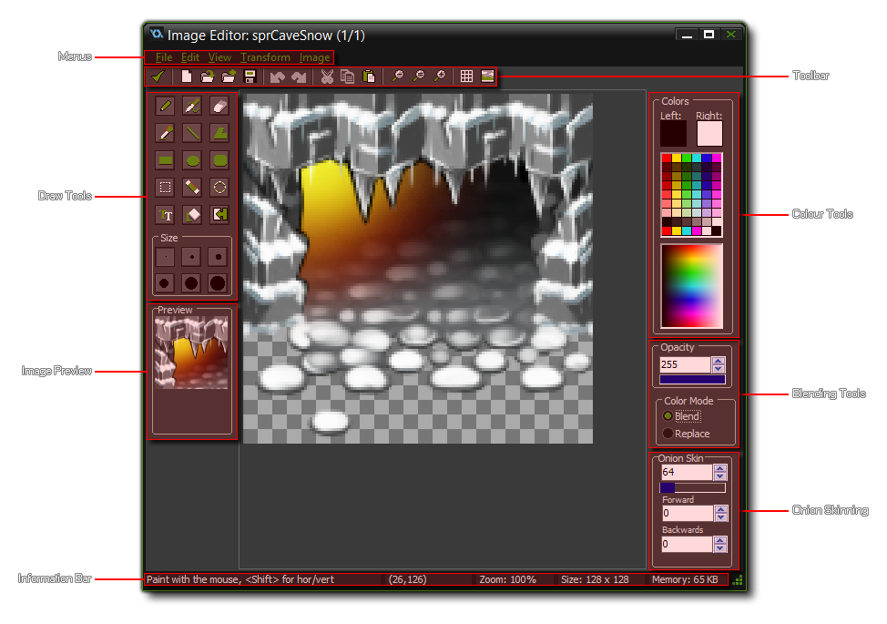
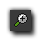

Editing Subimages
GameMaker: Studio has a built-in image editor that can
be used to edit individual sub-images of sprites and background
images.
To aid you in your task of creating a good game, GameMaker:
Studio provides you with its own editor for editing backgrounds
and sprites. Both resources share the same editor so although this
page refers to sprites, the exact same commands are available for
backgrounds too. To call the editor for a sub-image of a sprite,
select the sub-image in the sprite editor and choose Edit
Image from the Image menu (or double click on it, or
press the "Edit Image" button on the toolbar), and to edit a
background, open the background properties window and press the
button labelled Edit Background.
The built-in editor is primarily meant for making changes to
images, not for creating sprites and backgrounds from scratch, as,
although the built-in image editor is pretty powerful, it does not
have all the features of full-blown paint and drawing package. It
is great for roughing out some place-holder images but for brand
new sprites and graphics you probably want to use a separate paint
program, save the images as PNG files, and then load them into
GameMaker: Studio for further work. Note that you can also
set an external image editor in the Preferences
and so bypass this section all together.
When you start the image editor it will typically looks as
follows:

As you can see, the image to be edited takes up the space in the
middle of the screen with the editing tools and menus arrayed
around it. At the bottom of the screen is the Infobar where you can
get basic information about the state of the editor, with the
current mouse x/y position and the percentage of zoom being applied
shown at all times. It will also show the x/y coordinates of any
selection along with the maximal width and height of the
selection.
Menus
The drop down menus at the top of the screen are almost exactly
the same as those found in the Sprite Editor, particularly the
Edit Menu, the Transform Menu, and the
Image Menu. The File
Menu is similar too, but has a few less options and they work in
different ways:
- New: Creates a new image. This basically wipes the
current sub-image ready for you to start from scratch, but it does
not change the size.
- Save as PNG file: Saves the current image as a one frame
*.png file.
- Previous Image, Next image: Switches sub-images either
one frame to the left, or one frame to the right. In this way you
can edit multiple sub-images, one after another. Note: This
will effectively save any changes to the current sub-image, so use
with care as you get no prompt.
- Close saving changes: As it says, this will close the
editor and save any changes to the current image.
You also have a View
Menu for controlling how the image being created is shown in
the editor.
Toolbar
Like the drop down menus, the toolbar features a number of
commands that are covered in the section dealing with the Sprite Editor, however there are a
couple of new ones at the end which we will cover here:

Zoom In
Zoom the image in the editor to see better the individual pixels.
The mouse wheel can also be used for zoom too.
Zoom Reset
This resets the zoom to a 1x1 ratio.
Zoom In
Zoom the image in the editor out to see better the overall image.
The mouse wheel can also be used for zoom too.
Toggle Pixel Grid
You can click this to toggle the pixel grid on or off (the grid is
only visible when you zoom in).
Zoom In
This will toggle on and off the preview panel (situated below the
colour tools) so you can see the image at actual size even when
zoomed in or out.
Drawing Tools
The drawing tools permit you to select different brush sizes,
select regions, draw forms, etc... You can use them by left
clicking on one and then left clicking in the image being edited.
The full list of available draw tools can be found from the
following page:
- Drawing Tools
Colour And Blending Tools
The right hand side of the window is mostly taken up with the
colour tools. These are simple to use, yet give you great control
over the colours that you can draw with. At the top you have the
section labelled colours with two boxes labelled "Left" and
"Right" which set the colour for the corresponding mouse buttons
(these boxes also set the colours for certain drawing tools, which
we cover in the Drawing Tools section below. Beneath that
you have a basic colour picker which covers a very limited range of
the most used colours, while beneath that you can find a more
advanced colour picker for fine-tuning your choice. The
Opacity setting controls the transparency of what is being
drawn, with 255 being fully opaque and 0 being fully transparent,
while the last control, colour Mode, tells GameMaker:
Studio to draw and blend the alpha channel, or to overwrite it
using the current alpha.
Note that you can also create custom colour pallets, see the
section on Advanced Drawing
Tools.
Image Preview
The Image Preview shows you an image of the sprite as it
would appear in the game. If you double click on it, you can switch
between x1, x2 and x3 scaling, giving you a much clearer picture of
the sprite and how it looks while editing it in the main window.
Note that you may need to expand the sprite editor window to see
this. The preview window can be enabled or disabled from the
View Menu.
Onion-Skinning
At the bottom right of the window you can see the controls for
the Onion-Skinning function of the image editor. What
onion-skinning means is that in a single frame of any sprite
animation, you can choose to see any of the preceding or succeeding
four frames as a semi-transparent layer under the image frame you
are currently working on.
You can choose the alpha value that each frame will be drawn with,
from 0 to 255, as well as how many of the frames to show. By
setting the Forward value you can see those frames that come
after the frame currently being edited and by setting the
Backwards value, you can see those that come before. You can
set these to a value from 0 (none) to 4 (all four frames will be
drawn), permitting you a far greater control over animations and
positioning than was previously possible.
Note that we suggest using the onion-skinning over a colour-fill
background rather than a transparent one (you can set this option
from the View menu of the image editor and selecting Set
Transparency Background), as it makes the transparencies of the
various skins easier to see.
Advanced Drawing Tools
Apart from those tools listed above, there are also a number of
advanced options available to you when working with the Image
Editor. You can find more about these options from the following
page:
- Advanced Tools
© Copyright YoYo Games Ltd. 2018 All Rights Reserved